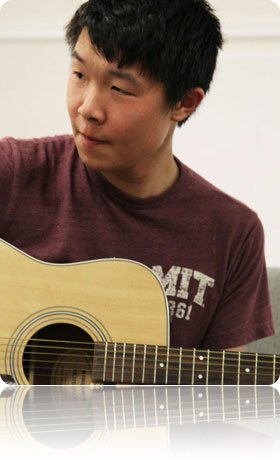
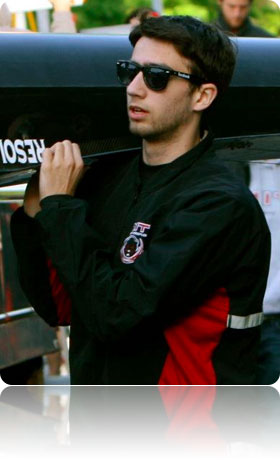
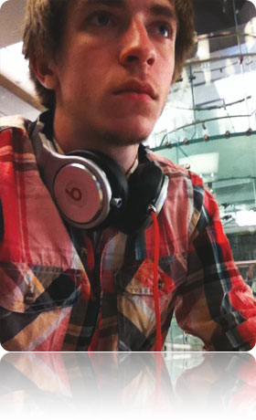

To keep it light, all members' descriptions were written by someone else chosen at random.

CLASS OF 2015
Austin Fathman
Despite his last name, rest assured Austin is one hundred percent muscle. Besides being a hardworking student, Austin is a dedicated athlete. Last season, he lead MIT's Swimming team to finish fourth in the nation. Austin is a great leader, a loyal friend, and a generous man - once, he even missed our chapter meeting to share his lunch with a homeless man het me on his way back from church!
Cosmos Darwin
Well-ordered, with a touch of natural selection and chaos - so has been defined the cosmos. As our first President, Cosmos kept the chapter together in its infancy. He lives out our value of patriotism to an extreme degree - he is very proud of his homeland, Canada. He does not have bad hair days, nor will you ever find him without a collared (usually purple) shirt donned. Born to lead, he's undoubtedly going far in life, so don't pass up the chance to meet him!
Demi Schoyombo
Oluwademilade Shoyombo is a man of ideas as spectacular and unexpected as his full name. Legend has it that he has the ability to summon fifty women to any Alpha Sigma Phi event. (The legend is as-of-yet unsubstantiated.) Oluwademilade’s humor contrasts with his calm demeanor, precluding any attempt at determining whether or not he is being serious. That being said, as a student, he is unquestionably serious about his studies in mechanical engineering and management. He also plays as a safety on the varsity football team. Oluwademilade is highly interested in entrepreneurship, seeking to develop his ideas into world-changing innovations. Alpha Sigma Phi's founding at MIT is just one example of the generative ability of the mind and hand of Oluwademilade Shoyombo. Also, you can call him Demi.
Francis Chen
Francis Chen is a living breathing embodiment of the MIT spirit. His time is so thoroughly committed to extracurricular activities that he probably does not even sleep. Francis stands proud and tall as a member of the Society of Asian Scientists and Engineers – so tall, in fact, that it’s easy to pick him out of the crowd. He is 6'2”, course 6-2, and always has between six and two meetings he should be attending. Francis expresses his love of music whenever he can. He has mastered his voice, guitar, piano, trumpet – and we're pretty sure we caught him banjo once. His free time this year will be spent battling through computer science classes, trying to keep the rest of us politically correct, and composing beautiful sappy songs. If you ask nicely, he may even write a song about you.

Logan Mercer
The fiercest of all Alpha Sigs, Logan is an indestructible, self-regenerating angel of death who rips his enemies to shreds with his adamantium claws. An inveterate thinker, Logan bides his time devising new concepts for Android apps and other, often-weaponizable contraptions. His genuine, outgoing nature made him an obvious choice to be Alpha Sig's recruitment director. Last spring, he applied his unparalleled athletic abilities for Alpha Sig in MIT's Dodgeball Tournament despite being legally blind. Logan is a good friend, a master of (mediocre) puns, and above all a champion of the values of Alpha Sigma Phi.
Keanu Delgado
Keanu boasts the perfect blend of smarts and intelligence, class and swagger, and ambition and free-spiritedness, amongst a multitude of other qualities. No matter the situation, be it serious or carefree, he brings out the best in others and quietly shows that he is a man among men. If you need a dependable person with a dependable word, Keanu Delgado is your man.

Joseph Abadi
Subtract his published theorem, his unmatched wit, and his ability to make even kings feel insignificant, and he's just a normal guy who really enjoys his math classes. When he's not busy correcting the world's mistakes or doing everyone's problem sets, you can almost certainly find Joseph at the gym working on his eight-pack or tearing up the soccer floor. He is a servant of the dark underworld of logic, a champion of superior character, and while he may not be what the people of MIT need, he is the hero that Alpha Sigma Phi deserves.
Kevin Sabo
You can always count on the availability of Kevin's strong opinion. His candor and direct attitude make him an authority of consistent, perceptive insight - whether you ask for it or not. Kevin's ubiquitous, brightly colored tuque serves as a beacon to spot him and his distinctive skater style at a mile away, but don't get the wrong idea - there is an avid basketball player, talented pianist, and passionate aerospace engineer under there.
